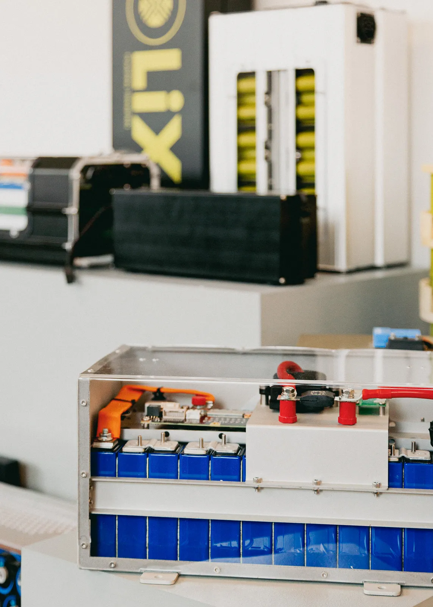
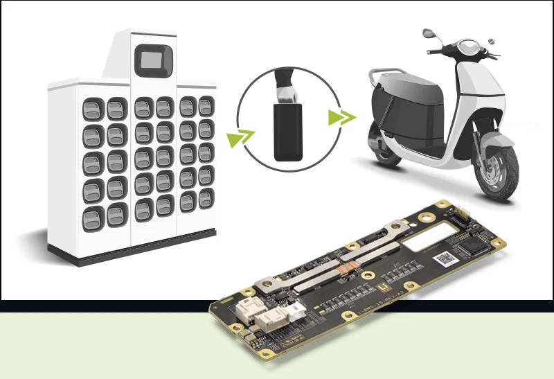
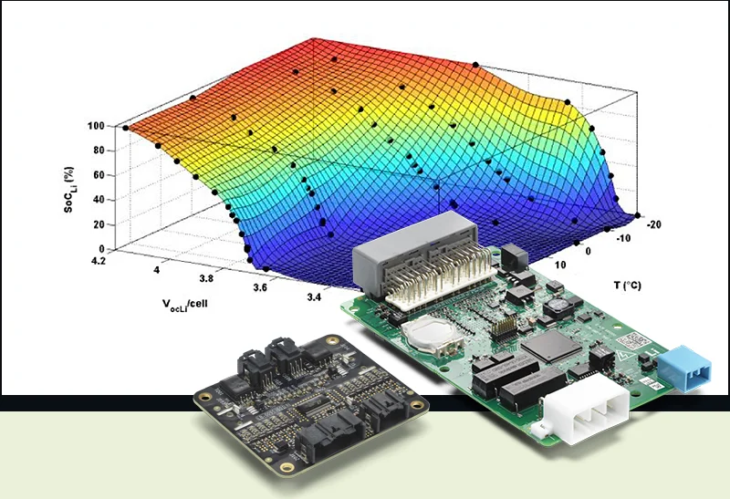
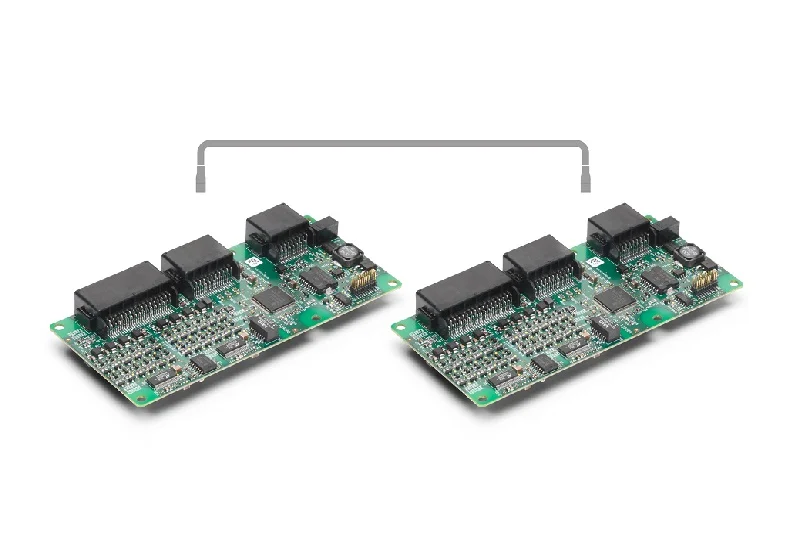

Every cell, monitored and protected.
Integrated and distributed BMS platforms, designed and firmware-tuned in-house.
Talk to our BMS engineers
Hardware and firmware, engineered together.
Our BMS platforms span integrated and distributed architectures, designed and firmware-tuned in-house rather than bought off a shelf. From a compact low-voltage unit to a safety-certified system spanning hundreds of cells, the hardware and the software are engineered together, for your pack.
A BMS is only as good as its fit to the pack it protects. We design the board, write the firmware and set the safety strategy around your cell chemistry, topology and communication protocol, rather than adapting a generic platform after the fact. The result is a management system that reports exactly what your application needs to know, on the interface it already speaks.

Four platforms, one design philosophy.
Pick by pack voltage, cell count and safety requirement. Each platform is a starting point we tailor to the application.

i-BMS
Integrated · Low voltageA compact, fully integrated management unit for low-voltage packs, with pre-charge, current shunt and pack disconnect built onto the same board. Suited to light electric vehicles and other compact systems where board space is tight.
- Up to 15 voltage channels
- 17–60V pack range
- Integrated pre-charge & disconnect

n-BMS
Distributed · Scalable monitoringA distributed architecture that scales across large series strings, with slave modules placed close to the cells and dual CAN channels back to the host. Built for systems that need extensive voltage and temperature coverage as the pack grows.
- Up to 384 cells in series
- 12 voltage & up to 12 temperature channels per module
- Dual CAN
n3-BMS
Distributed · Safety-certifiedThe distributed platform for high-voltage, safety-critical systems, engineered to ISO 26262 ASIL C and rated well beyond typical pack demands. Chosen where a functional safety case is part of the deliverable, not an afterthought.
- Up to 360 cells in series
- ISO 26262 ASIL C
- Up to 1000V / 2000A

c-BMS24x
Integrated · Smart pack managementAn integrated unit for mid-voltage packs that need more than monitoring: advanced state-of-charge estimation, parallel-pack operation and battery-swap support come built in, so pack-level intelligence does not need a separate controller.
- Up to 24 voltage channels
- 12–100V, up to 2000A
- Parallel pack & battery swap support
Tuned to the application, not the shelf.
Cell balancing strategy, state-of-charge estimation, fault handling and the communication protocol are calibrated to the cell chemistry and host system on every programme. The same board can speak CAN, RS485 or a custom protocol, because the firmware is ours to change.

Not sure which platform fits?
Tell us the pack voltage, cell count and safety requirement. We will help scope the right architecture before you commit to a design.